data = read.csv("data/All_Pokemon.csv")LOS POKÉMONS SOBRE SUS DATOS
¿Cómo están distribuidos los Pokémon?
Importamos el dataset de los pokemon del conjunto extraido desde https://www.kaggle.com/datasets/maca11/all-pokemon-dataset
Creamos las variables de combate adicionales que nos muestran qué tan atacantes son los Pokémon y cuáles son sus especialidades.
data$physicality_log <- log(data$Att / data$Def)
data$Speciality_log <- log(data$Spa / data$Spd)
data$att_split <- (data$Att / data$Spa)
data$def_split <- (data$Def / data$Spd)
data$combat_split <- ((data$Att + data$Spa) / (data$Def + data$Spd))Distribución de los Pokémon según su generación y su BST
Podemos apreciar en la siguiente gráfica que la compañía de Pokémon tiene en cuenta las estadísticas de combate al añadir una nueva generación, de forma que el sistema de combate no se vea desequilibrado por las nuevas incorporaciones.
ggplot(data, aes(x = BST, fill = factor(Generation))) +
geom_histogram(binwidth = 15, show.legend = FALSE) +
facet_wrap(~ Generation, ncol = 2) +
scale_fill_manual(values = gen_palette) +
labs(
title = "Distribución de los Pokémon por generación en base a su BST",
x = "Base Stat Total"
) +
theme_minimal()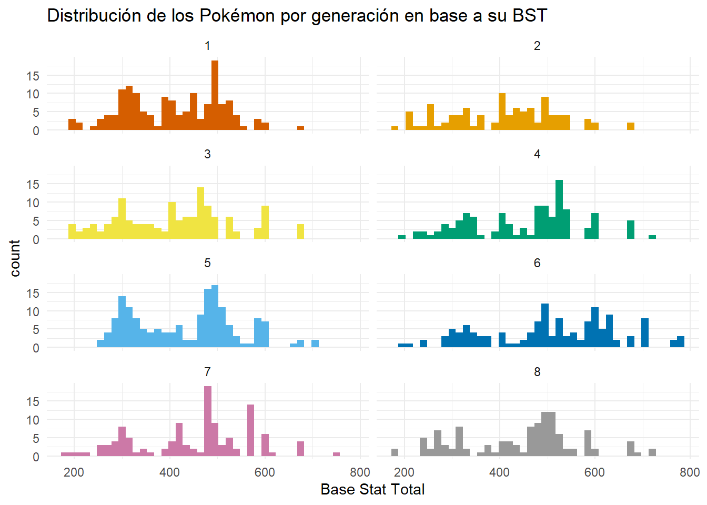
Podemos ver en la gráfica de radar que los pokemons de las primeras generaciones, de media, tenían unas estadísticas peores que las de estas últimas generaciones.
radar_data <- data %>%
group_by(Generation) %>%
summarise(
HP = mean(HP, na.rm = TRUE),
Att = mean(Att, na.rm = TRUE),
Def = mean(Def, na.rm = TRUE),
Spa = mean(Spa, na.rm = TRUE),
Spd = mean(Spd, na.rm = TRUE),
Spe = mean(Spe, na.rm = TRUE)
)
radar_data %>%
filter(Generation %in% c(1, 3, 6, 8)) %>%
ggradar(
group.line.width = 1.2,
group.colours = gen_palette[c("1", "3", "6", "8")],
group.point.size = 0
)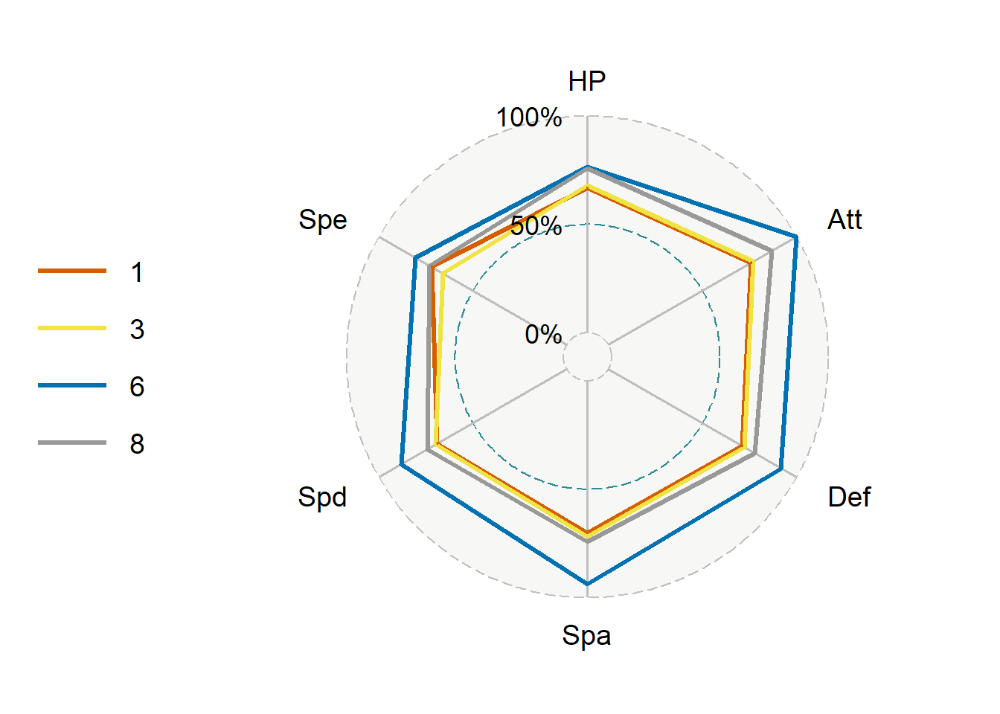
Con un jitter plot, poder apreciar aún mejor la distribución de los Pokemons por su estadística de combate total. Vemos que las últimas generaciones han recibido muchos más Pokémon con mayores estadísticas que las primeras generaciones.
gen_means <- data %>%
group_by(Generation) %>%
summarise(mean_BST = mean(BST, na.rm = TRUE))
ggplot(data, aes(x = factor(Generation), y = BST, color = factor(Generation))) +
geom_jitter(
width = 0.2,
alpha = 0.6,
size = 2
) +
geom_line(
data = gen_means,
aes(x = Generation, y = mean_BST, group = 1),
color = "#8c8a85",
alpha = 0.7,
linewidth = 1
) +
geom_point(
data = gen_means,
aes(x = Generation, y = mean_BST),
color = "red",
alpha = 0.9,
size = 2
) +
scale_color_manual(values = gen_palette) +
labs(
title = "Media de BST por generaciones",
subtitle = "La línea representa la media por generación",
x = "Generación",
y = "Base Stat Total (BST)",
color = "Generación"
) +
theme_minimal()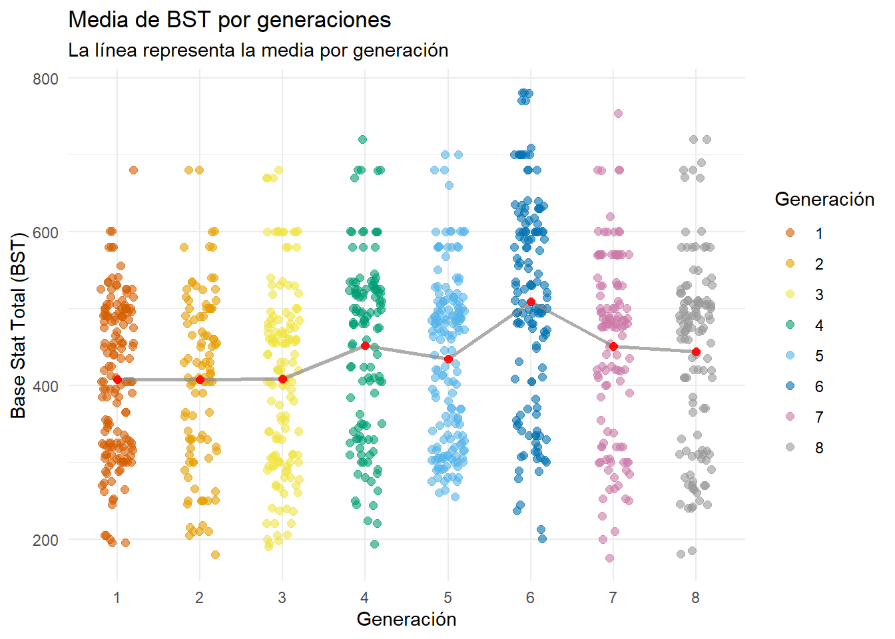
Distribución de los Pokémons por su tipo
Distribución de los Pokémon por sus tipos; aquellos Pokémon que tengan 2 tipos cuentan por el primero y por el segundo.
type_counts <- data %>%
select(Type.1, Type.2) %>%
pivot_longer(cols = c(Type.1, Type.2), values_to = "Type") %>%
filter(!is.na(Type), Type != "") %>%
count(Type, sort = TRUE) %>%
mutate(Type = factor(Type, levels = Type))
ggplot(type_counts, aes(x = reorder(Type, n), y = n, fill = Type)) +
geom_col(show.legend = FALSE) +
coord_flip() +
scale_fill_manual(values = type_palette, drop = FALSE) +
labs(
title = "Frecuencia de los tipos de Pokémon",
subtitle = "Los Pokémon con tipos duales cuentan por los 2",
x = NULL
) +
theme_minimal()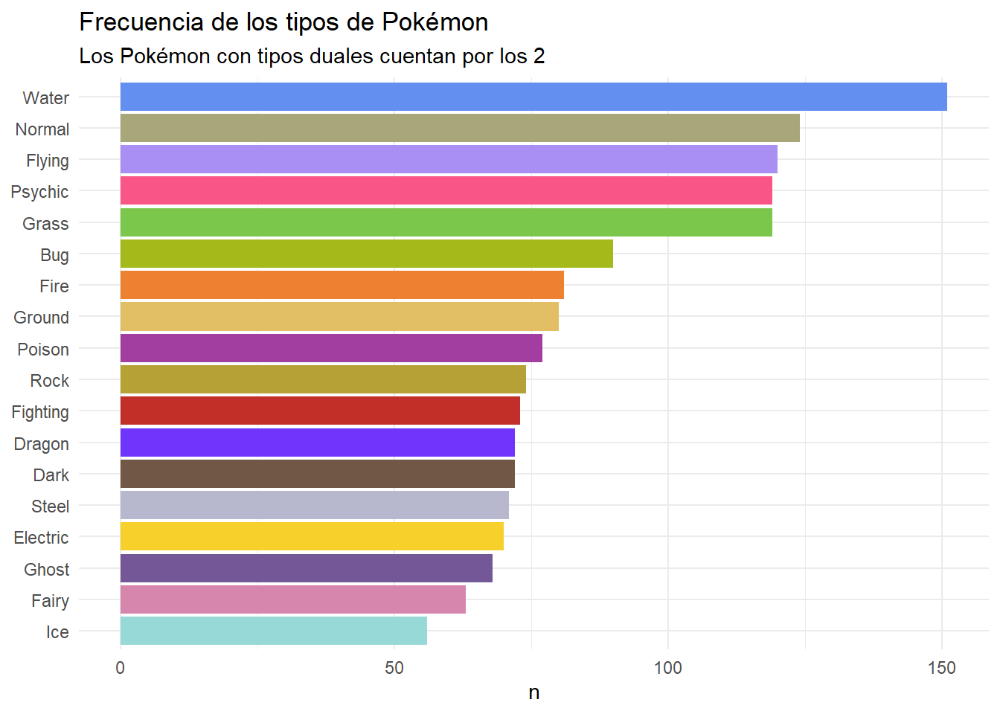
Distribución de los tipos de Pokémon por su tipo primario, sin contar los tipos secundarios.
type1_counts <- data %>%
filter(!is.na(Type.1), Type.1 != "") %>%
count(Type.1, sort = TRUE) %>%
mutate(Type = factor(Type.1, levels = Type.1))
ggplot(type1_counts, aes(x = reorder(Type.1, n), y = n, fill = Type.1)) +
geom_col(show.legend = FALSE) +
coord_flip() +
scale_fill_manual(values = type_palette, drop = FALSE) +
labs(
title = "Distribución del tipo primario (Type.1)",
x = NULL
) +
theme_minimal()
Distribución de los Pokémon según si son de tipo dual o singular
mono_dual <- data %>%
mutate(is_dual = ifelse(is.na(Type.2) | Type.2 == "", "Single-type", "Dual-type")) %>%
count(is_dual)
ggplot(mono_dual, aes(x = is_dual, y = n, fill = is_dual)) +
geom_col(show.legend = FALSE) +
labs(
title = "Distribución de Pokémon por el número de tipos",
x = NULL, y = "Count"
) +
theme_minimal()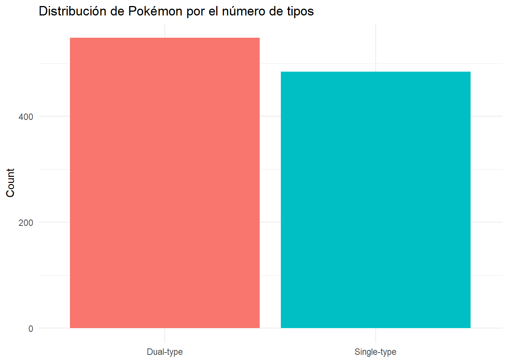
Distribución de los tipos por su BST y la mediana del BST
type_bst <- data %>%
select(Type.1, Type.2, BST) %>%
pivot_longer(cols = c(Type.1, Type.2), values_to = "Type") %>%
filter(!is.na(Type), Type != "") %>%
mutate(Type = factor(Type))
type_order <- type_bst %>%
group_by(Type) %>%
summarise(med_BST = median(BST, na.rm = TRUE), .groups = "drop") %>%
arrange(desc(med_BST))
type_bst <- type_bst %>%
mutate(Type = factor(Type, levels = type_order$Type))
ggplot(type_bst, aes(x = Type, y = BST, fill = Type)) +
geom_violin(trim = FALSE, alpha = 0.7, show.legend = FALSE) +
geom_boxplot(width = 0.15, show.legend = FALSE) +
coord_flip() +
scale_fill_manual(values = type_palette, drop = FALSE) +
labs(
title = "Distribución de BST por tipo",
subtitle = "Los pokemons duales cuentan por cada tipo",
x = NULL,
y = "Base Stat Total (BST)"
) +
theme_minimal()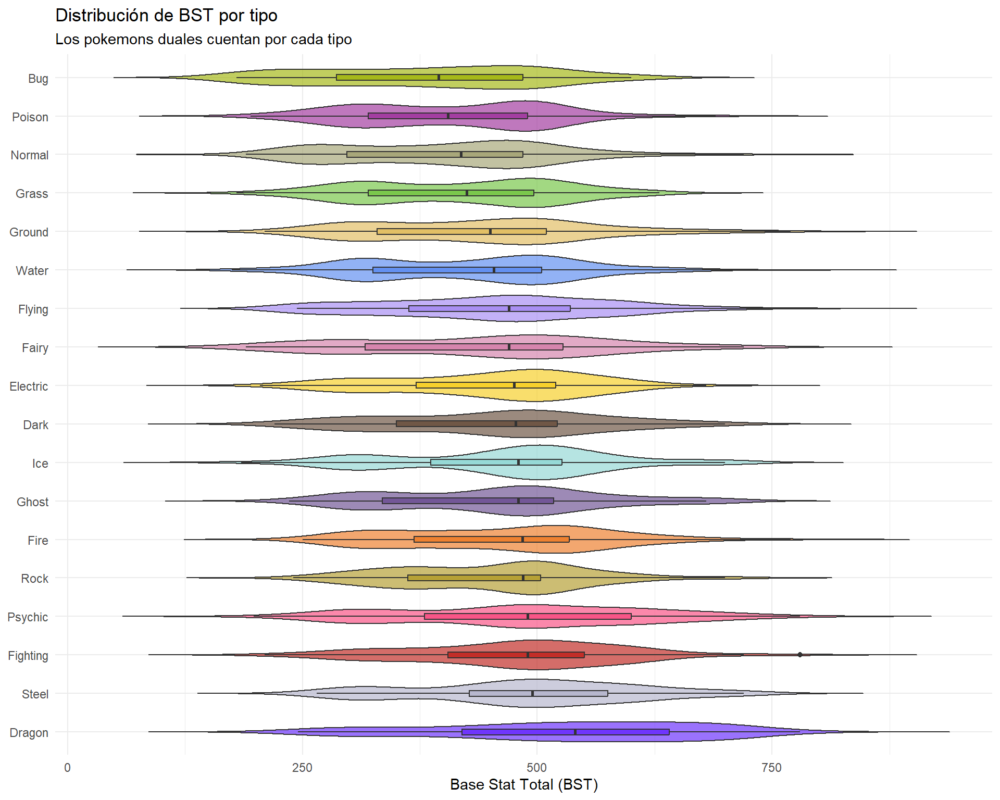
Distribución de los tipos por las generaciones, donde vemos que hay un cambio en el paradigma de los tipos
type_gen <- data %>%
select(Generation, Type.1, Type.2) %>%
pivot_longer(cols = c(Type.1, Type.2), values_to = "Type") %>%
filter(!is.na(Type), Type != "") %>%
count(Generation, Type)
ggplot(type_gen, aes(x = factor(Generation), y = n, fill = Type)) +
geom_col() +
scale_fill_manual(values = type_palette, drop = FALSE) +
scale_y_continuous() +
labs(
title = "Distribución de tipos por generaciones",
subtitle = "Los Pokémon duales cuentan por cada tipo",
x = "Generaciones",
y = "Tipos",
fill = "Type"
) +
theme_minimal()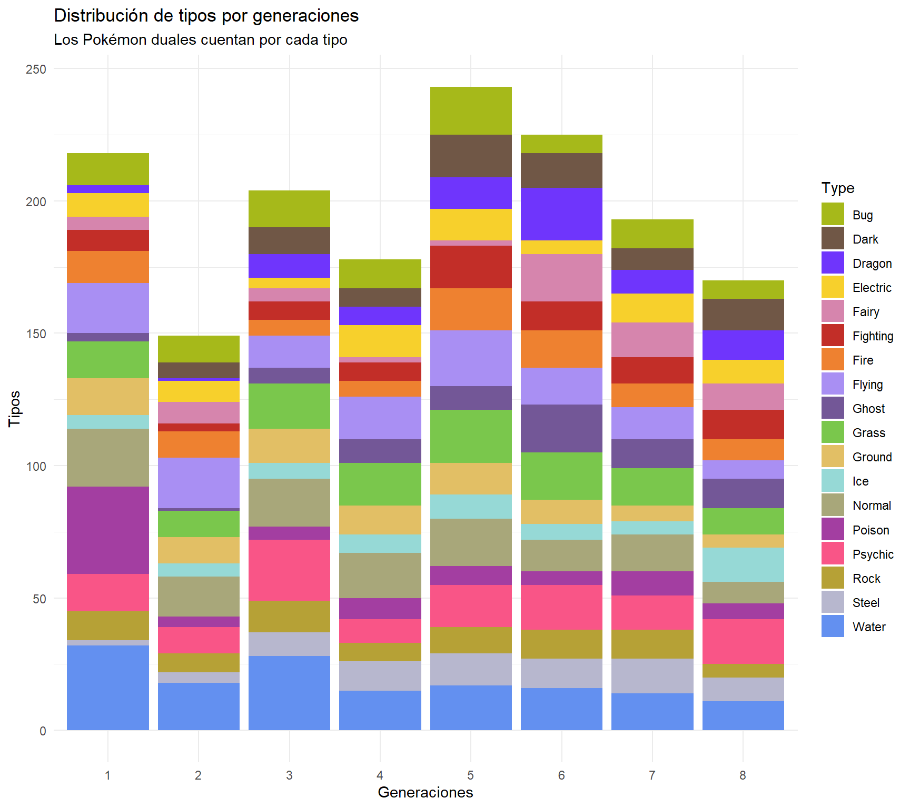
Pokémons según las estadísticas de combate relativas
Distribución de la fisicalidad y la especialidad de los Pokémon por generaciones
ggplot(data, aes(x = physicality_log, y = Speciality_log, color = factor(Generation))) +
geom_point(alpha = 0.5, size = 1.8, show.legend = FALSE) +
geom_smooth(aes(group = 1), method = "lm", se = TRUE, alpha = 0.2, show.legend = FALSE) +
facet_wrap(~ Generation, ncol = 2) +
scale_color_manual(values = gen_palette) +
coord_cartesian(xlim = c(-2, 2), ylim = c(-2, 2)) +
labs(
title = "Arquetipo de los Pokémon por generaciones",
x = "Physicality log(Att / Def)",
y = "Speciality log(Spa / Spd)"
) +
theme_minimal()`geom_smooth()` using formula = 'y ~ x'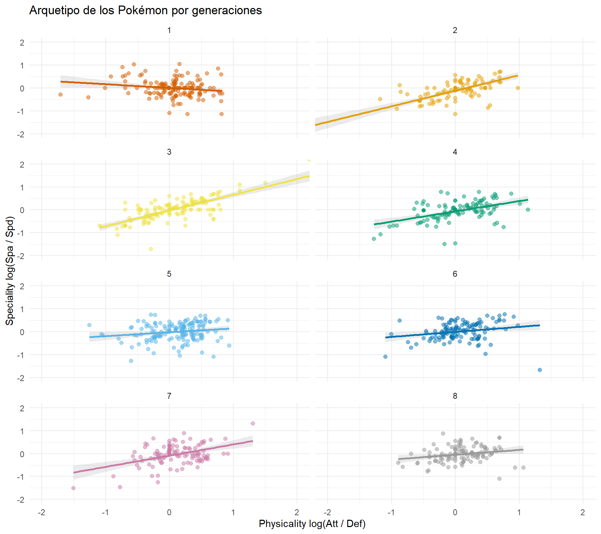
Distribución de los tipos de Pokémon según su predisposición de ataque
ggplot(data, aes(x = reorder(Type.1, att_split, FUN = median, na.rm = TRUE), y = att_split, fill = Type.1)) +
geom_boxplot(width = 0.4, outliers = FALSE, show.legend = FALSE) +
coord_flip() +
scale_fill_manual(values = type_palette, drop = FALSE) +
labs(
title = "Distribución del ataque según el tipo",
subtitle = "Attack Split (>1 atacante físico, <1 atacante especial)",
x = NULL,
y = "att_split (Att / Spa)"
) +
theme_minimal()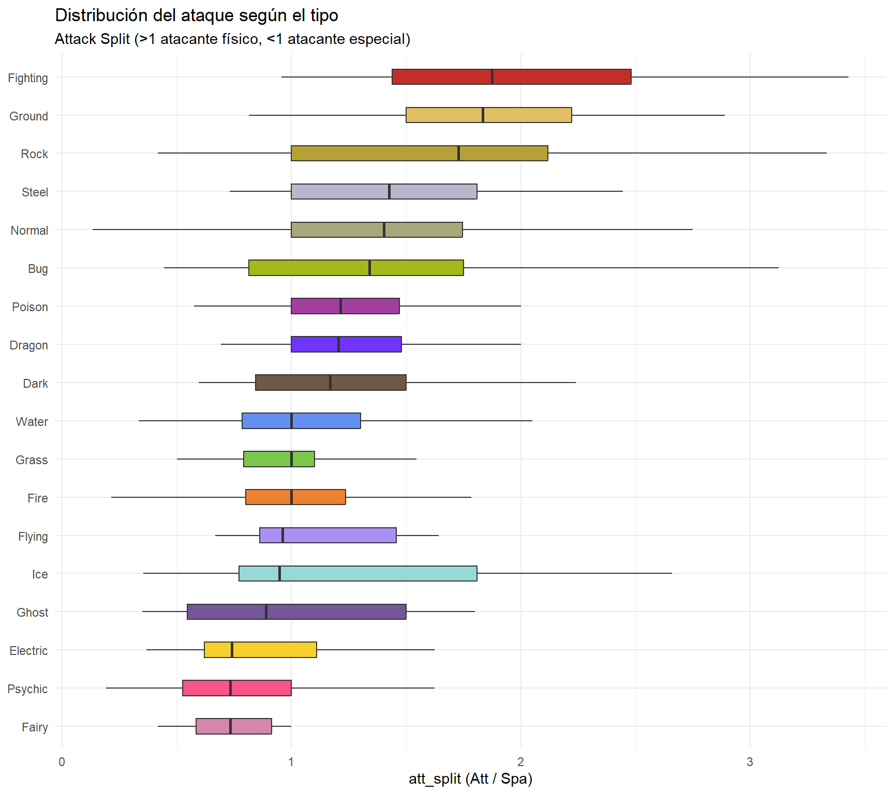
Distribución de los tipos de Pokémon según su predisposición de defensa
ggplot(data, aes(x = reorder(Type.1, def_split, FUN = median, na.rm = TRUE), y = def_split, fill = Type.1)) +
geom_boxplot(width = 0.4, outliers = FALSE, show.legend = FALSE) +
coord_flip() +
scale_fill_manual(values = type_palette, drop = FALSE) +
labs(
title = "Distribución de la defensa según el tipo",
subtitle = "def_split = Def / Spd (>1 defensivo físico, <1 defensivo especial)",
x = NULL,
y = "def_split (Def / Spd)"
) +
theme_minimal()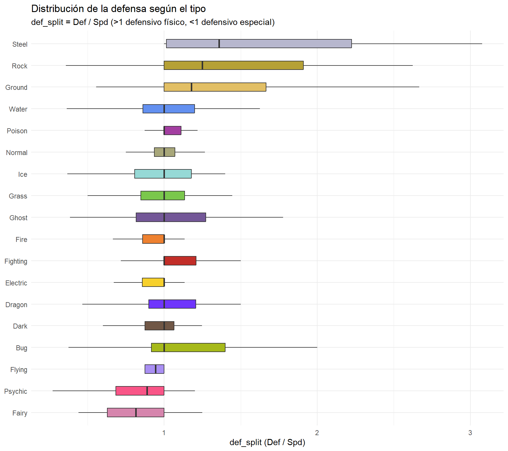
Distribución de la Combat_Split por el BST para ver si existe una correlación entre la especialización en ataque y la BST
ggplot(data, aes(x = BST, y = combat_split)) +
geom_point(alpha = 0.5, size = 2) +
geom_smooth(aes(group = 1), method = "loess", se = TRUE, color = "black", alpha = 0.3) +
coord_cartesian(ylim = c(-1, 3)) +
labs(
title = "Correlación entre BST y combat_split",
subtitle = "att_total / def_total (>1 Atacante, <1 Defensivo)",
x = "BST",
y = "Combat Split"
) +
theme_minimal()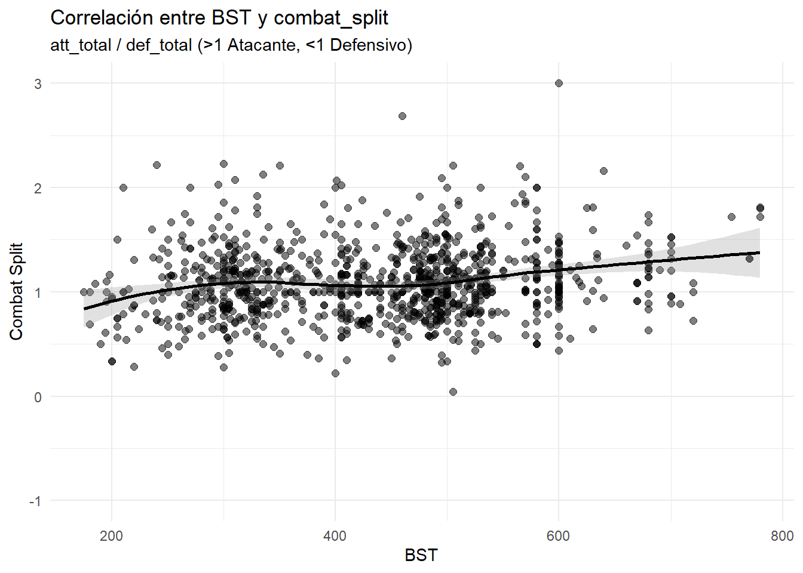
Pokémons por altura y peso
Distribución del peso y la altura de los Pokémon de todas las generaciones
ggplot(data, aes(x = Height, y = log(Weight))) +
geom_point(alpha = 0.6, size = 2) +
labs(
title = "Distribución de peso y la altura de los Pokémons",
subtitle = "Log de weight para ver mejor la distribución"
) +
theme_minimal()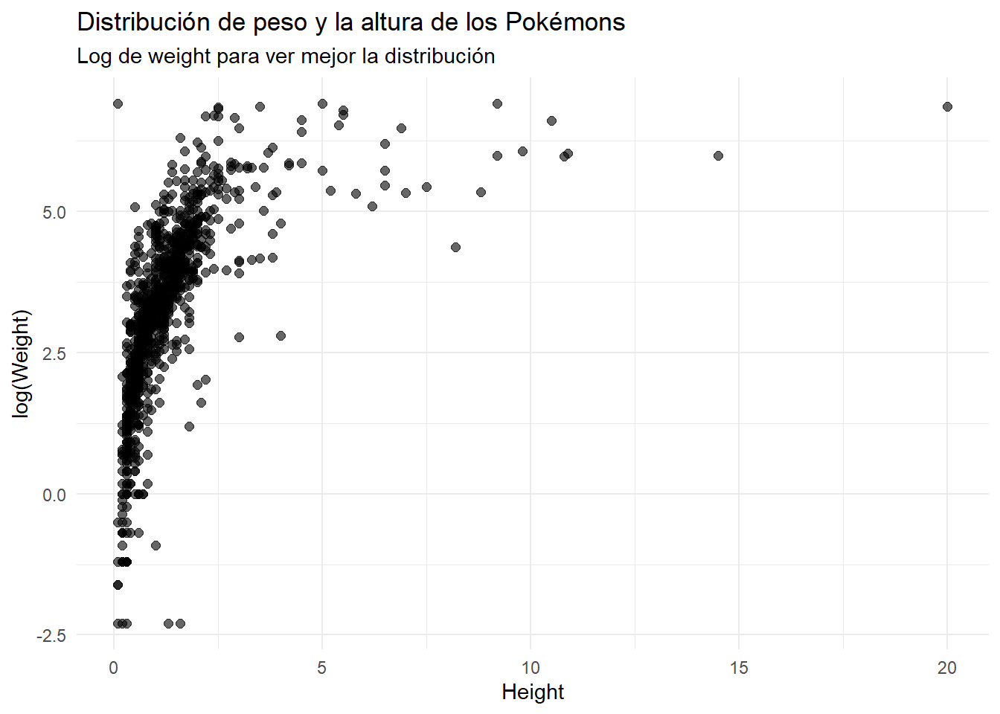
Distribución del BMI de los Pokemons a través de las generaciones
ggplot(data, aes(x = factor(Generation), y = BMI, fill = factor(Generation))) +
geom_boxplot(outliers = FALSE, show.legend = FALSE, ) +
scale_fill_manual(values = gen_palette) +
labs(
title = "BMI por generaciones",
x = "Generación"
) +
theme_minimal()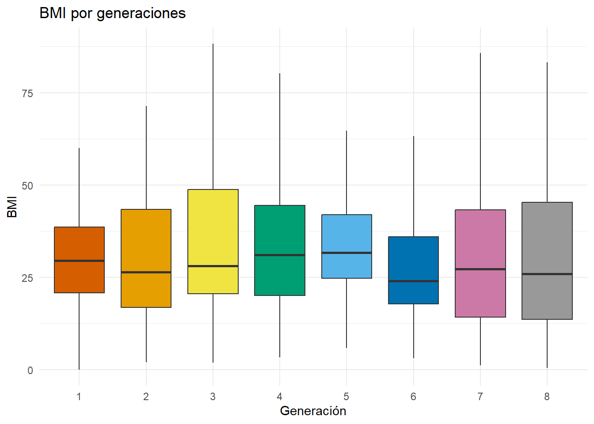
Distribución del BMI de los Pokémon
type_order <- data %>%
group_by(Type.1) %>%
summarise(med_BMI = median(BMI, na.rm = TRUE), .groups = "drop") %>%
arrange(med_BMI)
type_bmi <- data %>%
mutate(Type.1 = factor(Type.1, levels = type_order$Type.1))
ggplot(type_bmi, aes(x = Type.1, y = BMI, fill = Type.1)) +
geom_boxplot(width = 0.4, outliers = FALSE, show.legend = FALSE) +
coord_flip() +
scale_fill_manual(values = type_palette, drop = FALSE) +
labs(
title = "BMI por el tipo primario del Pokémon",
subtitle = "Distribución de la estructura corporal de los Pokémon según el tipo primario",
x = NULL,
y = "BMI"
) +
theme_minimal()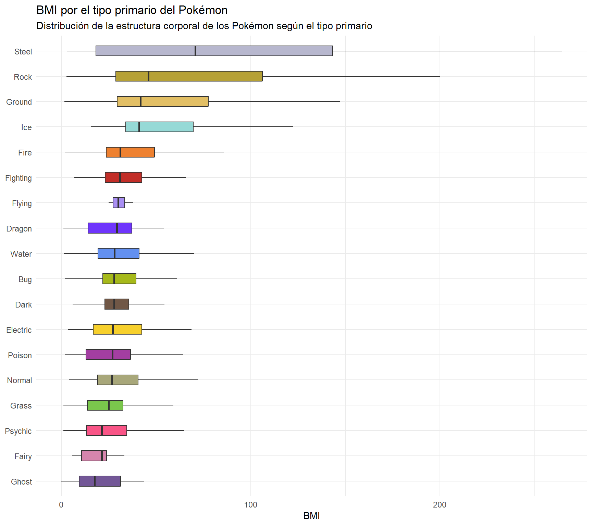
Pokémons según su tasa de captura
Distribución de la tasa de captura de todos los Pokémon
ggplot(data, aes(x = Catch.Rate)) +
geom_histogram(binwidth = 10, fill = "black", alpha = 0.8) +
labs(
title = "Distribución de la tasa de captura",
subtitle = "Cuanto mayor sea el número, más fácil un Pokémon es de capturar",
x = "Catch Rate",
y = "Count"
) +
theme_minimal()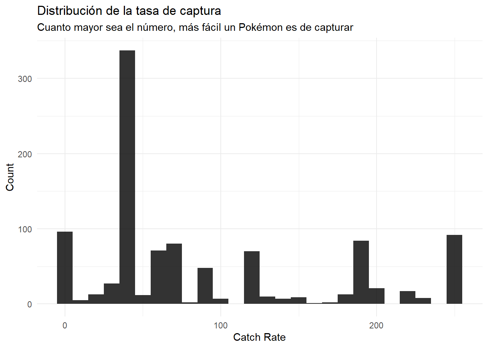
Distribucón de la tasa de captura por generaciones
ggplot(data, aes(x = factor(Generation), y = Catch.Rate, fill = factor(Generation))) +
geom_boxplot(outliers = FALSE, show.legend = FALSE) +
scale_fill_manual(values = gen_palette) +
labs(
title = "Tasa de captura por Generaciones",
x = "Generación",
y = "Catch Rate"
) +
theme_minimal()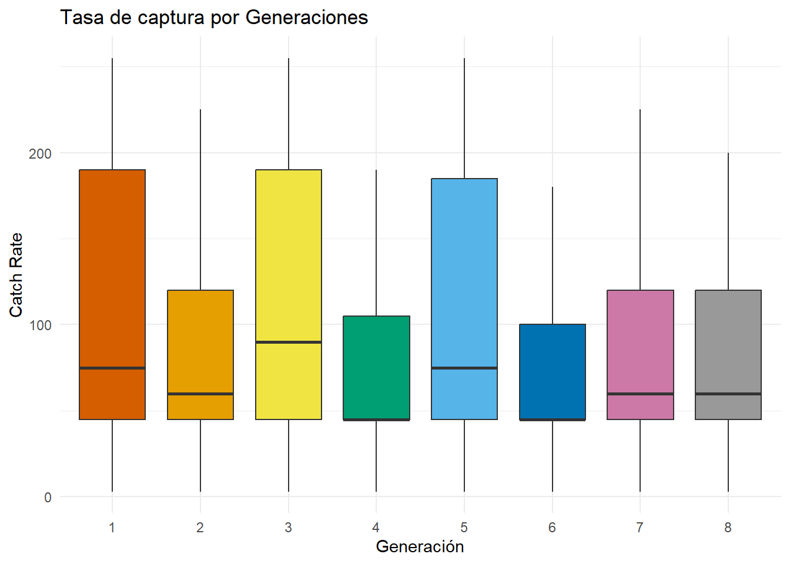
Distribución entre la tasa de captura y BST
ggplot(data, aes(x = BST, y = Catch.Rate)) +
geom_point(alpha = 0.6, size = 2) +
geom_smooth(aes(group = 1), method = "loess", se = TRUE, color = "black", alpha = 0.3) +
labs(
title = "Correlación entre BST y la tasa de captura",
subtitle = "La tasa de captura baja a medida que sube el BST",
x = "Base Stat Total (BST)",
y = "Catch Rate"
) +
theme_minimal()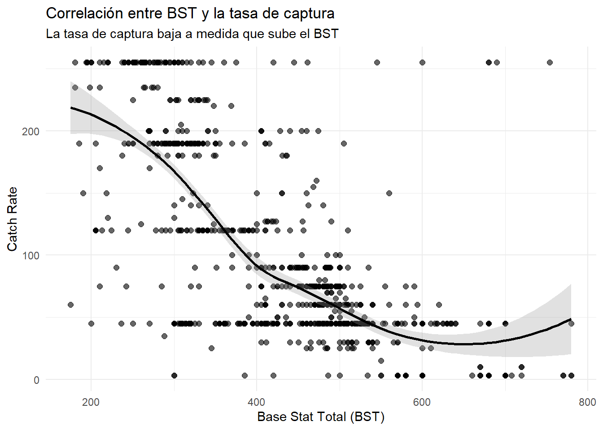
Diferencia en la tasa de captura entre Pokémon legendarios y no legendarios
data_legend <- data %>%
mutate(
legend_status = ifelse(Legendary, "Legendary", "Non-Legendary")
)
ggplot(data_legend, aes(x = legend_status, y = Catch.Rate, fill = legend_status)) +
geom_boxplot(outliers = FALSE, show.legend = FALSE) +
scale_fill_manual(values = c("#5359b8", "#ababab")) +
labs(
title = "Final evolutions tend to have lower catch rates",
x = NULL,
y = "Catch Rate"
) +
theme_minimal()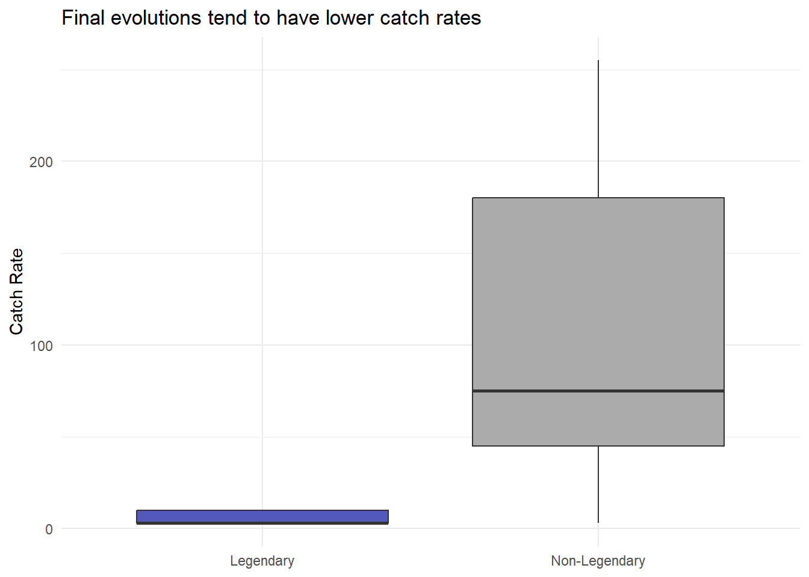
Pokémons según sus debilidades
Distribución de las debilidades según los tipos primarios de los Pokémon
ggplot(data_weak, aes(x = Type.1, y = n_weak, fill = Type.1)) +
geom_boxplot(outliers = FALSE, show.legend = FALSE) +
coord_flip() +
scale_fill_manual(values = type_palette, drop = FALSE) +
labs(
title = "Debilidades según el tipo primario",
x = NULL, y = "Count of weaknesses"
) +
theme_minimal()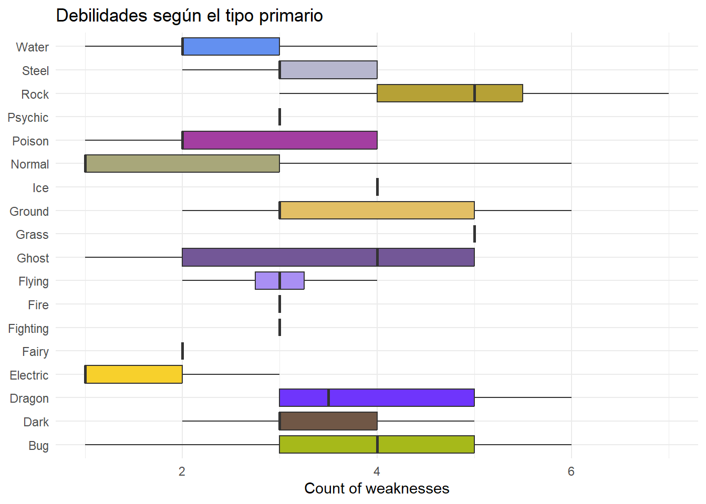
Distribución del número de debilidades (aquellos tipos que tienen un multiplicador mayor que 1) y el BST
ggplot(data_weak, aes(x = BST, y = n_weak)) +
geom_point(alpha = 0.15, size = 1.6) +
geom_smooth(method = "lm", se = TRUE, color = "black", linewidth = 1) +
labs(
title = "Correlación entre BST y el número de debilidades",
subtitle = "Tendendia lineal entre las dos variabels",
x = "BST",
y = "N of weaknesses (>1)"
) +
theme_minimal()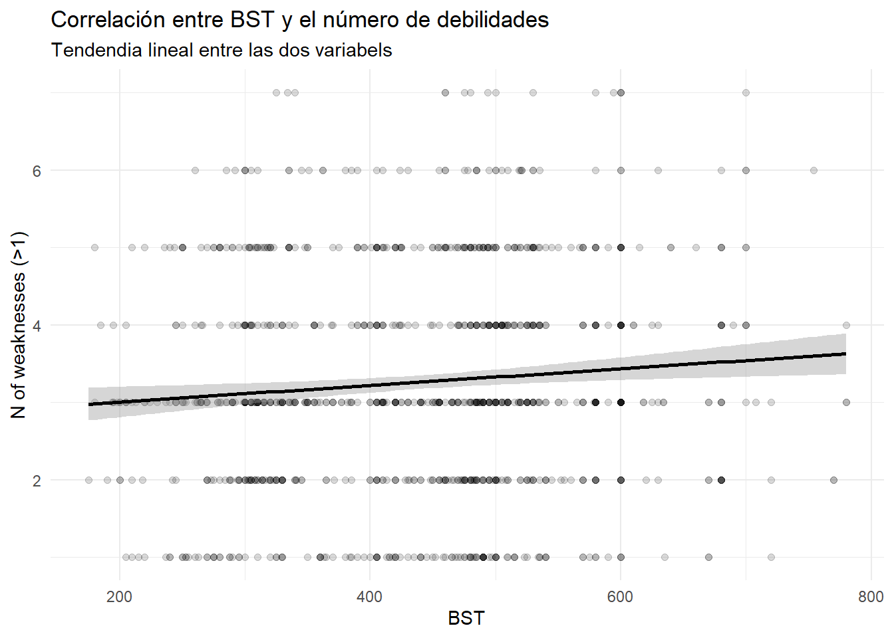
Headmap con la representación de los tipos según la media de debilidad (multiplicador) que tengan contra los otros tipos
against_long <- data %>%
select(Type.1, all_of(against_cols)) %>%
pivot_longer(cols = all_of(against_cols), names_to = "Against", values_to = "Multiplier") %>%
mutate(Against = sub("^Against_", "", Against)) %>%
group_by(Type.1, Against) %>%
summarise(avg_multiplier = mean(Multiplier, na.rm = TRUE), .groups = "drop")
ggplot(against_long, aes(x = Against, y = Type.1, fill = avg_multiplier)) +
geom_tile() +
scale_fill_gradient(low = "grey95",high = "grey20") +
labs(
title = "Media de defensividad por el tipo primario",
subtitle = "Cuanto mayor el multiplicador mayor el daño",
x = "Tipo Atacante",
y = "Tipo primario",
fill = "Avg multiplier"
) +
theme_minimal() +
theme(axis.text.x = element_text(angle = 45, hjust = 1))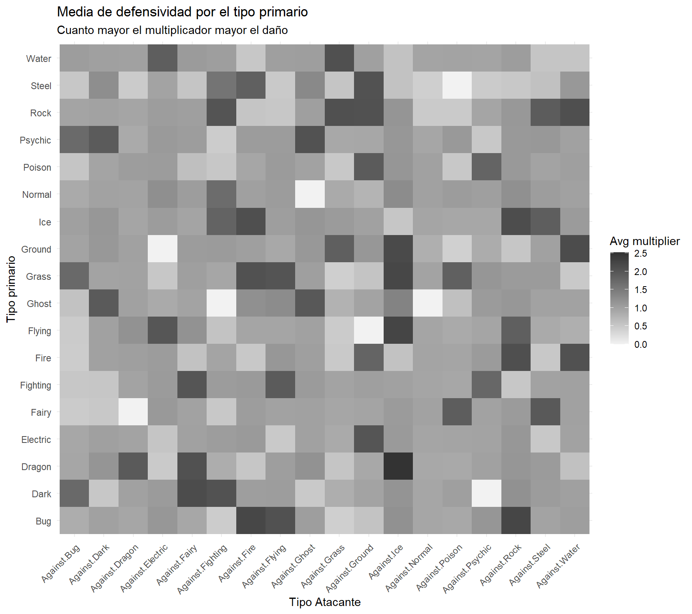
Diferencia entre Pokémons normales y Pokémons especiales
Consideramos a los Pokémon especiales tanto a los legendarios como a aquellos que tienen una forma alterna (i.e., megaevolución)
Distribución de BST según la tipología del Pokémon (Legendario, Alolan, Galarian, Mega, Normal)
ggplot(data_forms, aes(x = form_group, y = BST, fill = form_group)) +
geom_violin(trim = FALSE, alpha = 0.8, show.legend = FALSE) +
geom_boxplot(width = 0.1, outliers = FALSE, show.legend = FALSE) +
labs(
title = "Pokémon especiales contra normales: BST",
subtitle = "Los Pokémon con formas especiales tienden a tener una mayor BST",
x = NULL,
y = "Base Stat Total (BST)"
) +
theme_minimal()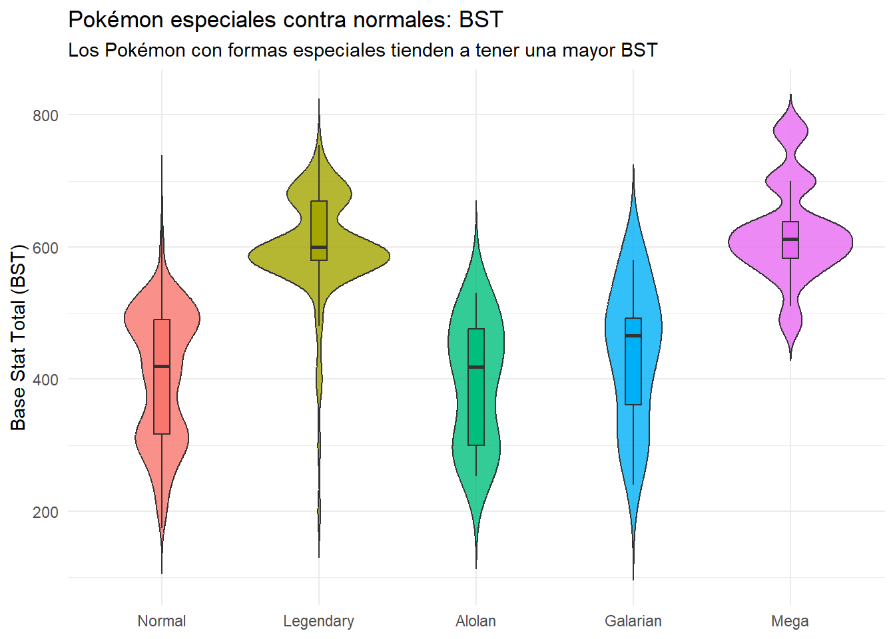
Distribución de la predisposición combativa de los Pokémon
ggplot(data_forms, aes(x = form_group, y = combat_split, fill = form_group)) +
geom_violin(trim = FALSE, alpha = 0.8, show.legend = FALSE) +
geom_boxplot(width = 0.1, outliers = FALSE, show.legend = FALSE) +
coord_cartesian(ylim = c(0, 3)) +
labs(
title = "Pokémon especiales contra normales: combat_split",
x = NULL,
y = "Base Stat Total (BST)"
) +
theme_minimal()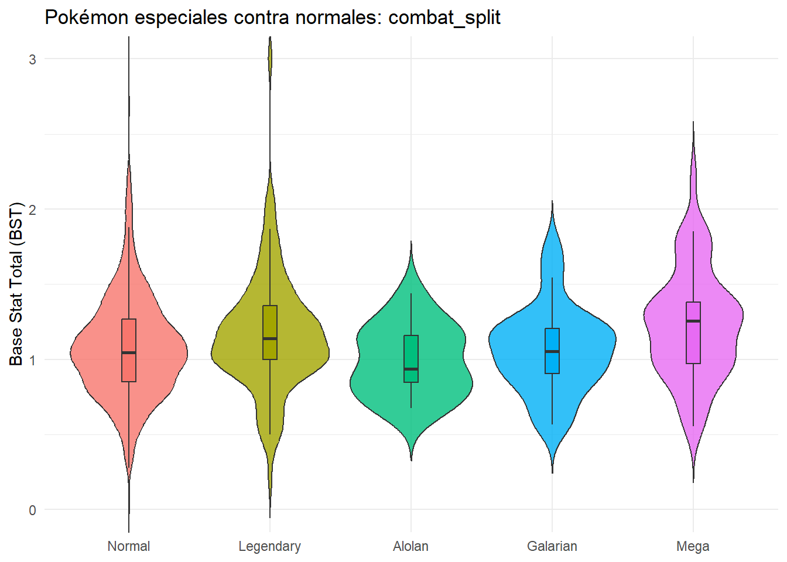
Mejores Pokemons segun sus estadisticas y debilidades
Implementando una fórmula simple donde cada debilidad resta un 25, el número de resistencias suma un 10 y el número de inmunidades suma un 25 a la puntuación total. De forma que tenemos un mejor estimador de las estadísticas de combate de los pokemons
data_scored <- data_weak %>%
mutate(score = BST - 25*n_weak + 10*n_resist + 20*n_immune)
top10 <- data_scored %>%
arrange(desc(score)) %>%
slice_head(n = 10) %>%
mutate(Name = factor(Name, levels = rev(Name)))
ggplot(top10, aes(x = Name, y = score, fill = Type.1)) +
geom_col() +
coord_flip() +
scale_fill_manual(values = type_palette, drop = FALSE) +
labs(
title = "Mejores Pokémon según su BST y sus defensas",
subtitle = "score = BST − 25·n_weak + 10·n_resist + 20·n_immune",
x = NULL,
y = "Score",
fill = "Tipo"
) +
theme_minimal()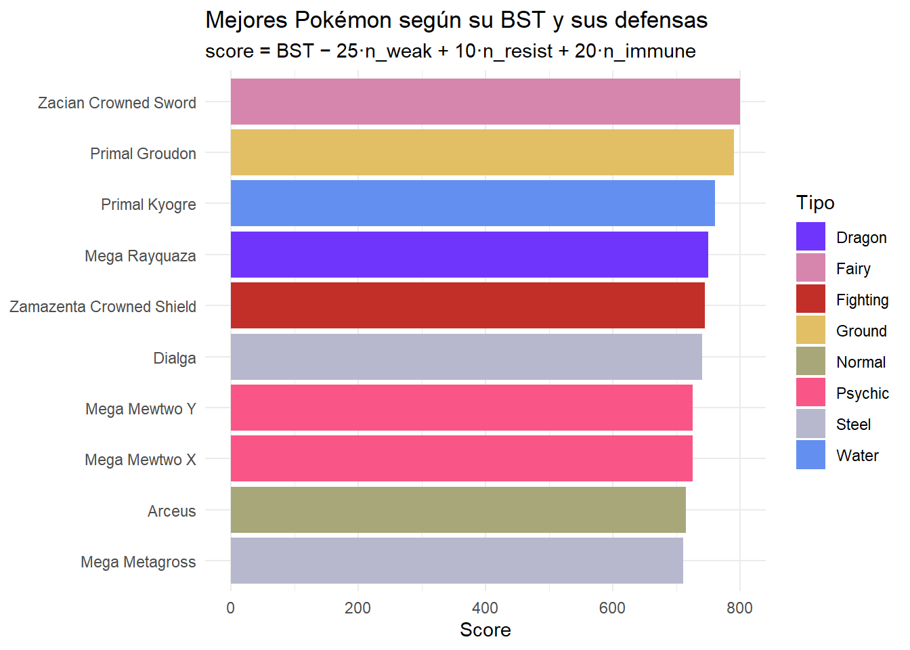
Peores Pokemons segun sus estadisticas y debilidades
Con la misma fórmula de antes también podemos calcular los Pokémon más débiles según la puntuación de BST y defensas
bot10 <- data_scored %>%
arrange(desc(score)) %>%
slice_tail(n = 10) %>%
mutate(Name = factor(Name, levels = Name))
ggplot(bot10, aes(x = Name, y = score, fill = Type.1)) +
geom_col() +
coord_flip() +
scale_fill_manual(values = type_palette, drop = FALSE) +
labs(
title = "Peores Pokémons según su BST y sus defensas",
subtitle = "score = BST - 25·n_weak + 10·n_resist + 25·n_immune",
x = NULL,
y = "Score",
fill = "Tipo"
) +
theme_minimal()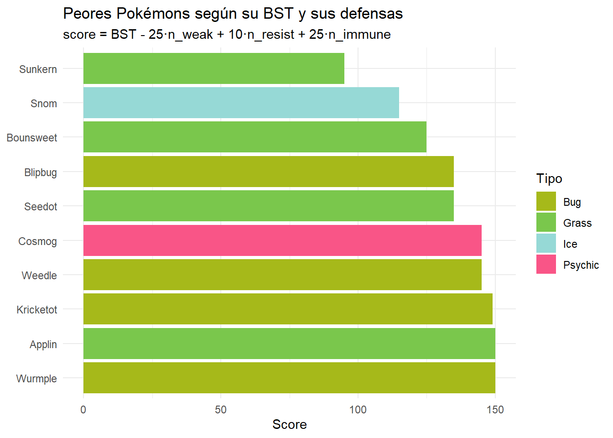
Referencias
All Pokemon Dataset. (2021, October 20). Retrieved from https://www.kaggle.com/datasets/maca11/all-pokemon-dataset
Marshuu. (2023, January 8). Poverty rate in the US (animation). Retrieved from https://www.kaggle.com/code/marshuu/poverty-rate-in-the-us-animation/report
R CODER. (2024, February 10). R CHARTS | A collection of charts and graphs made with the R programming language. Retrieved from https://r-charts.com/
Package index. (n.d.). Retrieved from https://ggplot2.tidyverse.org/reference/index.html
Coder, R. (2024, January 4). Gráfico de radar en ggplot2 con ggradar. Retrieved from https://r-charts.com/es/ranking/ggradar/
Pivot data from wide to long — pivot_longer. (n.d.). https://tidyr.tidyverse.org/reference/pivot_longer.html
OpenAI. (2026). ChatGPT [Large language model]. https://chat.openai.com/chat